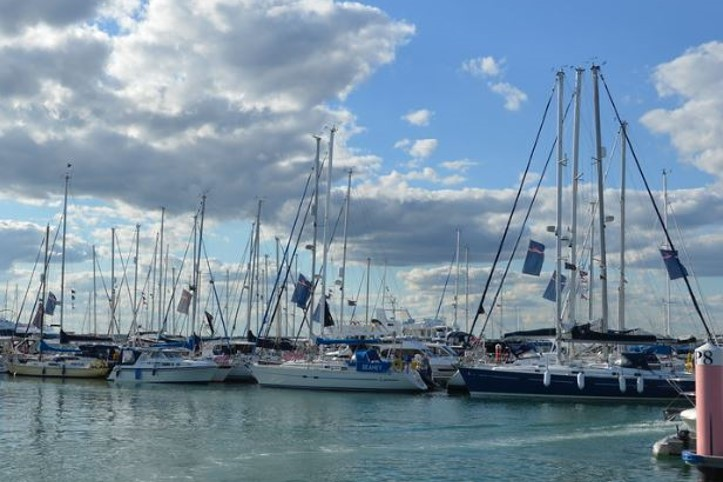
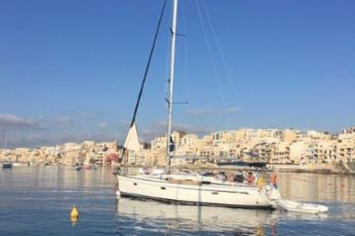
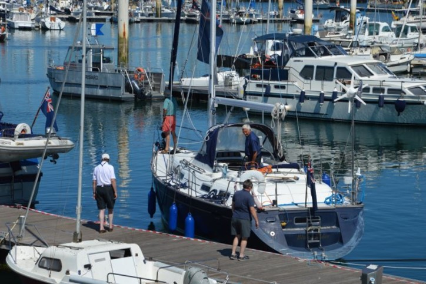
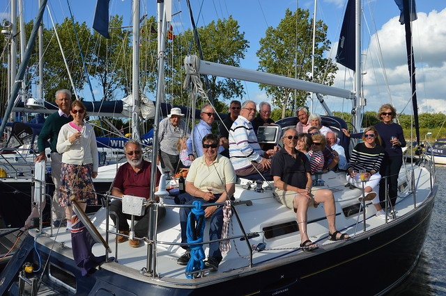

01
Rallies and cruising
Well-organised sailing rallies and longer cruises in UK waters and abroad, as well as charter cruises further afield.

On water and ashore
The Club programme
We have six sailing events, seven social events, and one training course planned within our 2026 programme, encompassing the Solent, South West, and Merseyside, ensuring there is something to appeal to all members.

Well-organised sailing rallies and longer cruises in UK waters and abroad, as well as charter cruises further afield.

A programme of subsidised training, opportunities to join member boats as crew and the ability to find crew from amongst the membership.

Excellent formal and informal social events in marinas, yacht clubs and venues around the UK.
Further afield
Our popular Charter Rally returns to the Ionian, offering another excellent opportunity for shared cruising in one of the Mediterranean's most attractive sailing areas.
An accompanied passage to Northern Spain, timed to allow participants to witness a total solar eclipse in August.
Events across the Solent, South West and Merseyside, from relaxed gatherings to memorable formal occasions.
Guidance for eligible members applying for permits to wear the undefaced Blue Ensign and uphold Club privileges.
2026
| Date(s) | Event (on Water / Shore) | Location |
|---|---|---|
| 14 February | AGM Meeting. Lunch after the AGM | Council Room, King's College, Strand, London |
| 28 February | Northern Dinner | West Lancashire Golf Club, Liverpool |
| 29 March | Sea Survival Course | Chichester |
| 12 April* | Fitting Out Lunch | Hornet Services Sailing Club (HSSC) — Gosport |
| 25 Apr – 28 Apr | Spring Meet (W) | Yarmouth / Lymington |
| 22 May – 26 May | Solent May Rally (W) | Southampton / Cowes / Southsea |
| 4 Jun – 8 Jun | South West Rally & Dinner (S) (W) | Teignmouth / Brixham / Dartmouth |
| 25 Jun – 28 Jun | Sail East (W) | Nothney / Littlehampton / Hornet |
| 18 Jul – 28 Aug | Biscay Eclipse Cruise (S) (W) | Northern Brittany – Aviles (Spain) |
| 12 Sep – 20 Sep | Med Rally (W) | Ionian |
| 11 Oct* | Laying Up Lunch | Royal London Yacht Club Cowes |
| 28 Nov | Annual Dinner | HMS Excellent Wardroom |
| 12 Dec | Christmas Party | Civil Service Club (London) |